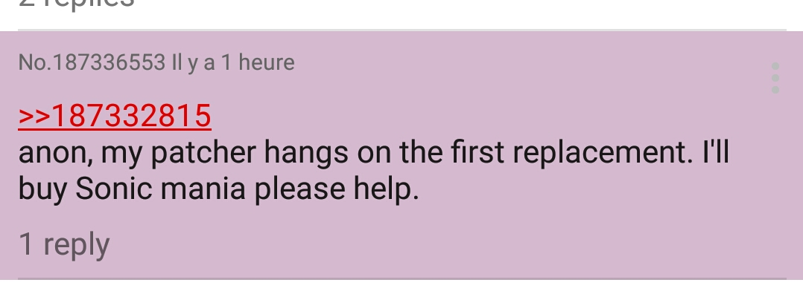

I've been playing Fate/Grand Order for a pretty long time now, and have irredeemably fallen into deep gambling addiction.
Besides the whole "paying for coomer JPEGs" thing, FGO often relies on heavy farming to get a bunch of resources.Regular mobage trite really

While I do enjoy the gameplay to a point, repeating a battle 300 times is not fun no matter how you try to spin it...
For a while, the easiest way to automate farming in FGO was to throw the game on an Android emulator and run a Lua script on it.
Alas, FGO is also quite known for its hate of any form of game/phone modification.
(I very much recommend reading this article if you haven't already done so, it'll be more interesting than anything written here.)
At some point during the sweet summer of 2017, FGO stopped working on most famous emulator used to run it, Memu.
The developers had implemented some extra checks for it when the game launches.
Back then I was temporarily without a decent phone as well, so the incentive to get the bloody thing working again was quite high. Never underestimate what someone can do for his vidyagames and login streaks...
Surprisingly, the checks were quite easy to circumvent, as they were only looking for specific identifiers, which could be replaced in the emulator's memory directly with a hex editor:
Somehow doing a grand-scale string replacement in-memory like that didn't completely crash the thing, which is kinda impressive I guess?
I take no credit for figuring that one out, it came out of some dudes on github, who promptly decided to hide/delete it, thinking it'd make the trick last longer.

Oh, those absolute, utter dinguses.

The method was obviously screenshotted and spread around on various boards.
It worked, but busting out HxD everyime you wanted to run your farming script? 100% pain.
The Github thread was starting to look like a mid-2000's warez forum with everyone begging for the method through Facebook by this point(seriously go flip through it it's unreal), which made me think things could be improved somewhat.
So with the following goals in mind:
- Destroying the secret club for the sole purpose of spreading chaos over the land
- Making my own life easier so I could farm the upcoming Nerofest lottery in peace
I wrote an automated memory patcher in .NET/WinForms in a few days:

I say .NET, but this is almost more P/Invoke than interpreted considering all the patching code goes through Win32's VirtualQueryEx/ReadProcessMemory/WriteProcessMemory calls. ¯\_(ツ)_/¯
Releasing this thing anonymously into the wild was especially funny, with various reactions such as:
- FUD about the patcher being malware despite being uploaded with the source code attached
- Reddit tutorials being written referring to the program as the "Patchouli Patcher" since I had accidentally left my .vs folder in the uploaded code like an idiot
- FUD about the patcher getting your FGO account potentially banned
- People begging for support screaming that they did buy Sonic Mania (sega should pay me for all this free advertising I gave them)

I never got it to reliably work on Windows 7/8, but nonetheless it seemed to be quite popular! (Looking back at the source, I suspect there's something wrong with my usage of SYSTEM_INFO.)
Most importantly, it spread the method around so other people could implement it in Cheat Engine or similar.
Closing thoughts
As a result, I got my share of anonymous hacker fame, saved some login streaks (including the guy making the Lua farming script so yknow, what goes around comes around ✨), and autofarmed to my hearts' content until Nox got reliable FGO support, at which point I switched and never looked back. 👏
I've uploaded the latest version of the code I had here: https://github.com/Difegue/Chaotic-Realm/tree/master/MemuPatcher
I don't think this will be useful to anyone considering it's just a half-baked memory scanner and Cheat Engine literally does the same thing, but you might get a laugh out of it.
I think FGO still manages to block emulators every now and then, but I've entirely moved to just running FGA on my phone instead of the Lua script these days, so I don't really care anymore.


{kind=link}